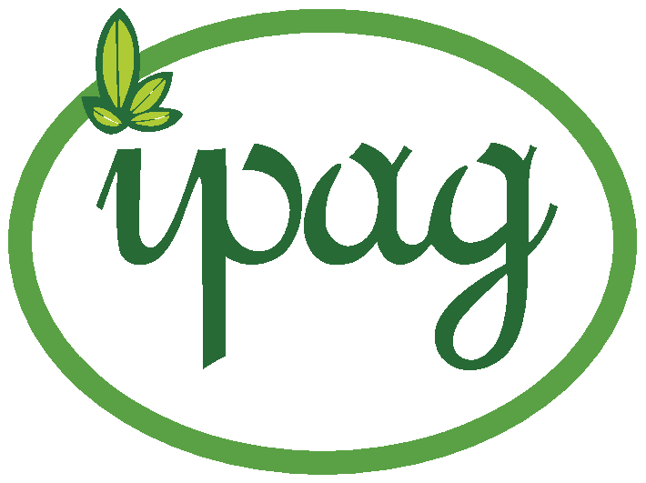
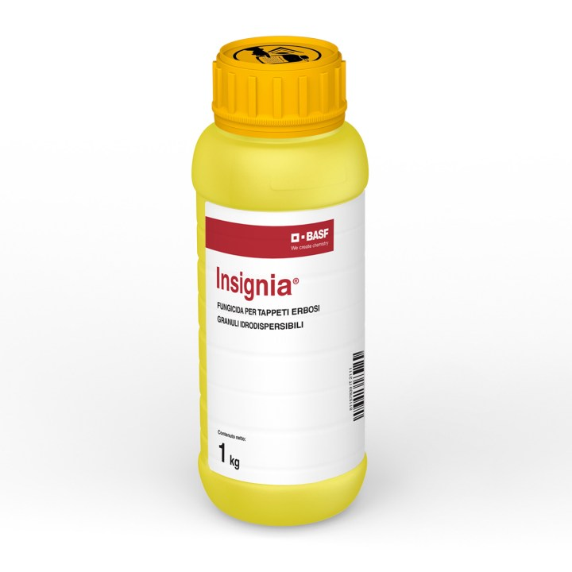

INSIGNIA
Un alleato indispensabile per la gestione integrata e sostenibile del verde professionale
Con l’estate entriamo nel periodo più delicato per tutte le specie microterme: alte temperature, alta umidità e piante sotto stress a causa di tagli ravvicinati, traffico intenso e microclimi umidi dati da irrigazioni frequenti, sono un mix perfetto per lo sviluppo di alcuni dei patogeni più aggressivi per il nostro manto erboso. Per questo la manutenzione professionale dei tappeti erbosi richiede, soprattutto in questo periodo dell’anno, prodotti fitosanitari efficaci, selettivi e a basso impatto ambientale, in grado di garantire continuità funzionale e al tempo stesso migliorare la qualità estetica e la salute delle piante anche sotto stress elevati.

È in quest’ottica che oggi vogliamo porre la nostra attenzione su INSIGNIA, fungicida a base di pyraclostrobin che si distingue come uno strumento ad alto valore tecnico in grado di unire un elevato controllo delle principali malattie del tappeto erboso ad una marcata azione fisiologica positiva sulla pianta, con benefici concreti in termini di colore, vigore e capacità di recupero.
Che cos’è Insignia?
INSIGNIA è un fungicida di copertura, con attività preventiva, a base di pyraclostrobin, sostanza attiva appartenente alla classe delle strobiruline: inibisce la respirazione mitocondriale dei funghi patogeni bloccando la catena di trasporto degli elettroni. Questo meccanismo d’azione impedisce la produzione di energia nelle cellule fungine, arrestando rapidamente la germinazione delle spore e lo sviluppo del micelio.
A differenza di altre strobilurine, una caratteristica distintiva del pyraclostrobin formulato da BASF è la sua affinità per le cere fogliari, che consente una adesione rapida e duratura alla superficie vegetale. Ciò garantisce un’ottima resistenza al dilavamento e una protezione efficace anche in condizioni climatiche instabili per esempio anche in presenza di rugiada o piogge leggere. INSIGNIA si caratterizza inoltre per un forte effetto “green-up”, derivante da benefici fisiologici che la molecola esercita direttamente sulla pianta
Quali vantaggi offre Insignia?
Insignia, in quanto fungicida ad ampio spettro è estremamente efficace contro un ampio numero di patogeni comuni sui tappeti erbosi di pregio; tra questi troviamo:
1) Rhizoctonia solani (Brown patch)
2) Colletotrichum spp. (Antracnosi)
3) Sclerotinia homoeocarpa (Dollar spot)
4) Drechslera spp. (Helminthosporiosi fogliare)
5) Fusarium spp. (Fusariosi invernale)
6) Pythium spp. (Pythium Blight)
La sua efficacia è ottimale con un’applicazione preventiva, ma si evidenziano buoni risultati anche con trattamenti curativi precoci, soprattutto su infezioni iniziali.
Oltre ai vantaggi diretti nel controllo delle malattie INSIGNIA presenta anche alcuni importanti benefici fisiologici sulla pianta (effetto “green-up”) come:
• Il miglioramento dei processi fotosintetici: la pianta trattata presenta una maggiore attività clorofilliana, con effetto di rinverdimento naturale, visibile già nei giorni successivi al trattamento.
• Una maggiore efficienza idrica: in presenza di stress termici o idrici, pyraclostrobin aiuta a regolare la traspirazione e migliora la resilienza allo stress ambientale.
• Uno sviluppo radicale maggiore: piante trattate con INSIGNIA sviluppano un apparato radicale più profondo e ramificato, capace di assorbire meglio acqua e nutrienti.
Questi benefici non solo aiutano il manto erboso a resistere meglio agli stress biotici e abiotici ma lo aiutano anche a riprendersi più rapidamente contribuendo così a una gestione più efficiente anche sotto il profilo idrico e nutrizionale.
Infine, INSIGNIA grazie alla sua alta persistenza d’azione (fino a 3–4 settimane) e bassa lisciviazione, riduce la necessità di interventi ripetuti, con minor impatto operativo e ambientale.
Quando e a che dose?
Il periodo ideale per l’utilizzo di INSIGNIA va dalla primavera inoltrata all’autunno, con particolare indicazione nei seguenti momenti:
• Fine Primavera/Inizio Estate: per prevenire le prime infezioni di Rhizoctonia e Dollar Spot.
• Durante il periodo estivo: per sostenere la pianta e proteggerla da Antracnosi e Pithium blight.
• Autunno: per consolidare la salute del tappeto erboso prima dell’inverno e ridurre insorgenza del Fusarium spp.
La dose consigliata è di 1-1,25 Kg/ha con un volume d’acqua di 800-1000 L/ha per una buona bagnatura fogliare. Si consigliano interventi distanziati di 2/3 settimane in base alla pressione fungina e alle condizioni meteorologiche.
Consigli d’uso
• Si consiglia di effettuare il trattamento nelle ore fresche della giornata
• Si consiglia di prediligere l’uso preventivo, soprattutto in aree con storicità delle malattie sopra citate.
• Si consiglia di alternarlo con fungicidi di diverso gruppo, ad esempio triazoli per evitare fenomeni di resistenza.
• Inserire INSIGNIA in un programma annuale di difesa integrata, combinandolo con corrette pratiche agronomiche: aerazione, taglio regolare, apporto di fertilizzanti a rilascio controllato.
• È particolarmente efficace se usato in sinergia con prodotti biostimolanti, per migliorare la vitalità complessiva del prato.
Conclusione
In un settore in cui le aspettative sono sempre più elevate e dove la pressione normativa sulla riduzione dell’uso di fitofarmaci è crescente, INSIGNIA rappresenta una soluzione in linea con i requisiti della moderna gestione del verde.
Il suo profilo tecnico completo, che integra efficacia fungicida preventiva e curativa, benefici fisiologici dimostrati e buona selettività verso l’ambiente e l’operatore, lo rende ideale per chi vuole:
• Mantenere un tappeto erboso in condizioni ottimali per tutto l’anno;
• Ridurre i danni da malattie nei momenti critici;
• Ottimizzare la resilienza del prato a stress abiotici e meccanici;
INSIGNIA rappresenta oggi una delle soluzioni più avanzate per un prato professionale sano, omogeneo e resistente, capace di offrire prestazioni elevate con un impatto ambientale contenuto.
Per ricevere un piano di difesa personalizzato, approfondimenti tecnici o supporto sulla rotazione dei fungicidi, contattaci; siamo a disposizione per accompagnarti nella gestione moderna del tuo tappeto erboso.